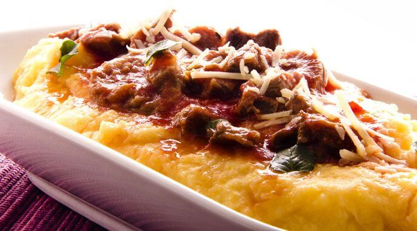

Polenta Paraguaya

La emblemática sopa paraguaya, resulta que no es una sopa, sino un delicioso pastel a base de harina de maíz, cebolla, queso fresco y huevos
Ingredientes
Salsa :
- Cebolla 1 unidad
- Pimiento 1 unidad
- Aceite 3 cdas.
- Carne picada especial 300 g.
- Tomate 2 unidades
- Sal 1 pizca
- Condimento para Carnes ALICANTE 1 cda.
Polenta :
- Caldo de Carne ALICANTE 1 sobre
- Huevos duros 2 unidades
- Aceitunas verdes 8 unidades
- Polenta instantánea 1 taza
- Queso rallado 2 cdas.
- Pimienta Negra en grano ALICANTE ½ cdita.
- Queso cremoso 300 g.
- Perejil Deshidratado ALICANTE cda. ½